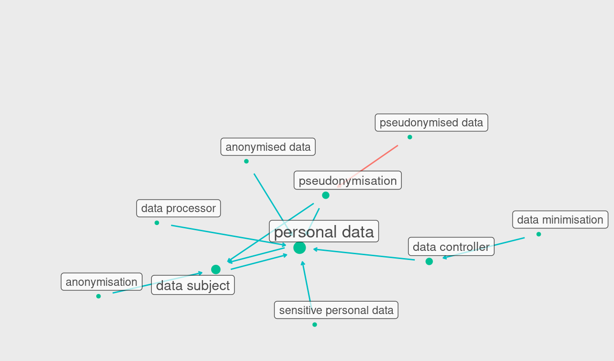

jultty • dataviz
projetos de visualização de dados
mdst-graphs
Acesse o projeto • Veja o código fonte
Estudo de caso sobre relações semânticas entre os termos do Multilingual Data Stewardship Terminology, um conjunto de definições ligadas à gestão de dados.
Emissões de CO2 por país

clima
Acesse a documentação • Veja o código fonte
![Gráfico de linhas mostrando a previsão de temperatura máxima e mínima na cidade de Birigui, São Paulo, do dia 26 de novembro de 2022 ao dia 3 de dezembro de 2022. Há um título com essa mesma descrição no topo do gráfico. Uma legenda informa as cores das linhas no canto superior esquerdo. A cor amarela é usada para a temperatura máxima e a cor azul para a temperatura mínima. O eixo Y mostra a temperatura e o eixo X mostra os dias com o dia da semana correspondente. A temperatura máxima sobe de aproximadamente 27 graus Celsius até 30 no dia 29, mantém-se estável até o dia 30 e depois continua a subir até atingir aproximadamente 33 no dia primeiro de dezembro. Ela se mantém estável até o dia dois e depois continua a subir até o último dia do gráfico, 3 de dezembro. A temperatura mínima começa no dia 26 de novembro abaixo de 17.5 graus Celsius e sobe até o dia 28 quando está abaixo de 20 graus. Ela começa a descer por um dia, marcando aproximadamente 16 graus no dia 29. Ela então sobe de forma estável até o dia 3 de dezembro quando atinge aproximadamente 22 graus Celsius.](assets/img/plot_birigui-sp_2022-11-26.png)
birigui = Cidade('birigui', 'sp')
manaus = Cidade('manaus', 'am')
cidades = [birigui, manaus]
aranha.obter(cidades)
tratadora.extrair(cidades)
tratadora.limpar(cidades)
tratadora.exportar(cidades)
plotadora.abrir_csv(cidades)
plotadora.plotar(lista_cidades=cidades,
chuva=True,
estilo='bmh')